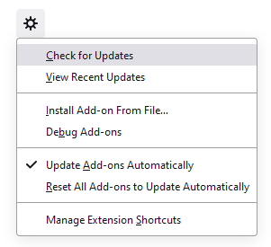

Find alternatives to no longer maintained Thunderbird extensions
Following are recommended replacements for no longer maintained extensions that have suitable alternatives.
-
suggested alternative:
-
suggested alternative:
-
No results found for “”
search addons.thunderbird.net ➡ -
The add-on “” seems to be compatible with the most recent Thunderbird .
Show Add-onDirectly after upgrading Thunderbird, the displayed information in the add-on manager could be outdated or the automatic update check could have failed due to a connection timeout to addons.thunderbird.net.
Please search for add-on updates manually, using the gear menu in the add-on manager as shown below, and/or restart Thunderbird.
